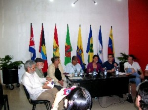
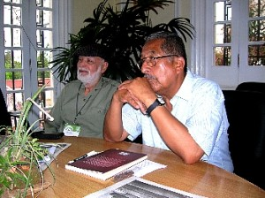

voces por la paz y la libertad se alzaron en la casa del alba cultural de la habana

En una tarde ligeramente invernal, cargada de lirismo y magia, se dieron cita una decena de poetas de Cuba y otras partes del mundo, para cantarle a la vida y a la necesidad de defender, no sólo el patrimonio cultural acumulado por el hombre en su devenir histórico, sino también la supervivencia de la especie humana y el destino del planeta tal como lo conocemos, porque no es un secreto para nadie que la civilización vive al borde de una guerra descomunal y la aspiración de todos los hombres de buena voluntad en el mundo es la de vivir en paz.

Entre los poetas que allí alzaron sus voces estaban Roberto Sosa, Poeta Nacional de Honduras, Hildebrando Pérez del Perú, Tarek William y Sol Linares, de Venezuela, Claudio Pozzani de Italia, Salvador Medina, de Panamá, y los cubanos Marilín Bobes y Alex Pausides, ante un público selecto que se resiste a permanecer indiferente ante los peligros que hoy azotan a la humanidad. 
Hildebrando Pérez y Tarek William, en nombre de la mesa directiva de la Red Mundial de Poetas en Defensa de la Humanidad, y de los poetas presentes, dieron lectura al Manifiesto de la Habana, un bello mensaje que afirma que aceptar el hambre, la enfermedad, la ignorancia y la injusticia como algo fatal inherente a la existencia humana, es un atentado a la esencia misma del hombre y hace un llamado a salvar al hombre, a los pájaros, a los árboles, a las mariposas, a los hipocampos y a los delfines, al aire, al cielo, a las madreselvas, a los olores y los colores, a las criaturas y a los elementos, juntos todos en esta hermosa casa azul en su aventura maravillosa por el tiempo y el cosmos, invitándonos a abrir para las generaciones de hombres y mujeres de mañana la posibilidad de respirar oxígeno incontaminado y beber agua potable.

Que sean destruidas para siempre todas las bombas atómicas. Que el dinero que gastan los gobiernos en armas se use para que los alimentos, las medicinas y el conocimiento les sean devueltos a sus dueños originales, los bellos habitantes de la tierra, para la curación del alma y el cuerpo porque hay que salvar las aguas y las tierras fértiles, las florestas y las ciudades del hombre y las escuelas y las fábricas.
Hay que salvar los atardeceres y las auroras, el milagro de la vida en el universo y eso es deber de los poetas, cantar y glorificar la belleza del mundo, revelar el espíritu humano en toda su grandeza y al mismo tiempo luchar contra las fuerzas regresivas que empujan al mundo a la barbarie.
Un mensaje que concluye invitándonos a poner obra y vida en la fundación de un mundo mejor, que no sólo es posible, sino imprescindible, porque sería un crimen permanecer indiferentes y aún tenemos muchísimo que hacer.
El hondureño Roberto Sosa, uno de los grandes poetas de la lengua española, conmovió a todos con sus versos salidos del corazón
Fue sin lugar a dudas una tarde hermosa en La Habana, en la que un grupo de poetas reunidos en la Casa del ALBA, alzaron sus voces contra la guerra y le cantaron a la vida y a la libertad.
María de los Ángeles Polo (Web Radio COCO)
Samstag, 12 de Febrero de 2011
DOSSIER
ROBERTO SOSA, Poeta Nacional de Honduras, 1930.
La yerba cortada por los campesinos
Cuántas veces nos ha parecido
que lo más importante de nuestras vidas
es el vuelo de las abejas que precede a las colegialas
que retornan de las aulas, pensando en nada,
felices como peces.
Y cuántas veces hemos razonado
que la rebeldía contra un sistema de cosas
Impuesto a través
de asesinos alquilados
investidos
de infinitos poderes,
nos dignifica.
En nuestra segunda inocencia hemos imaginado
que alguien nos llama
desde un lugar hermoso parecido al mar, y que la voz
viene de la garganta de esa mujer delgada que esperamos en vano,
o que nos llame el amigo de la infancia, aquel
cuyo padre comía tinieblas en los días difíciles.
Y cuántas veces al hablar de nuestra verdad
hemos creído
hablar de la verdad que interesa a las grandes mayorías
y nos hemos sentido emocionados por ello porque sabemos
que el líquido de la verdad altera el pulso y envía una carga
no acostumbrada al corazón, que puede convertirse de este modo
en una suerte de Esfinge sin enigmas.
Y así creemos vivir aproximándonos a lo perfecto.
En realidad
sólo
lo que hace el hombre
por enaltecer al hombre es trascendente.
La yerba cortada por los campesinos es igual a una constelación.
Una constelación es igual a una piedra preciosa,
pero el cansancio de los campesinos que cortaron la yerba
es superior al universo.
Demostrar los hechos mezclados con las lentitudes
de un fuego que no conocemos, y quemar incienso a las buenas
gentes
ayuda a vivir,
ayudar a bien morir.
Dibujo a pulso
A como dé lugar pudren al hombre en vida,
le dibujan a pulso
las amplias palideces de los asesinados
y lo encierran en el infinito.
Por eso
he decidido –dulcemente–
–mortalmente–
construir
con todas mis canciones
un puente interminable hacia la dignidad, para que pasen,
uno por uno,
los hombres humillados de la Tierra.
Esta luz que suscribo
Esto que suscribo
nace
de mis viajes a las inmovilidades del pasado. De la seducción
que me causa la ondulación del fuego
igual
que a los primeros hombres que lo vieron y lo sometieron
a la mansedumbre de una lámpara, De la fuente
en donde la muerte encontró el secreto de su eterna juventud.
De conmoverme
por los cortísimos gritos decapitados
que emiten los animales endebles a medio morir. Del amor
consumado.
Desde la misma lástima me viene.
Del hielo que circula por las oscuridades
que ciertas personas echan por la boca sobre mi nombre.
Del centro
del escarnio y de la indignación. Desde la circunstancia
de mi gran compromiso vive como es posible
esta luz que suscribo.
Los días difíciles
De joven creía que podía morir y renacer
de mis propios despojos.
Es una larga historia.
Fui marinero de la medianoche. Escalé montañas
con un cadáver atado a un tobillo. Falsifiqué mi efigie
a cambio de un plato de bellas falsedades: Fijé
mi residencia en el lado oculto de la realidad. Allí viví
diez años cometiendo abominables crímenes: escribí
a favor de la insolencia de los poderosos, novios purísimos
de la barbarie y agrimensores de la oblicua eternidad; elogié
la suavidad de las manos pausadas
de los ladrones de bancos; asesiné –por órdenes superiores–
el jardín de mi hermano mayor, que era su único tesoro.
Defendí con mi vida
las creencias de los mercaderes, ensalcé sus burlas sangrientas
a lo desconocido y su espantosa alegría de monos superiores.
Yo era entonces muy joven y creía que podía caer de bruces
sin sufrir daño alguno: Creía que podía conservar
sosegada en su hondura mi barba mitológica.
Estoy sorprendido de este sitio por dedicarse simplemente a la poesía